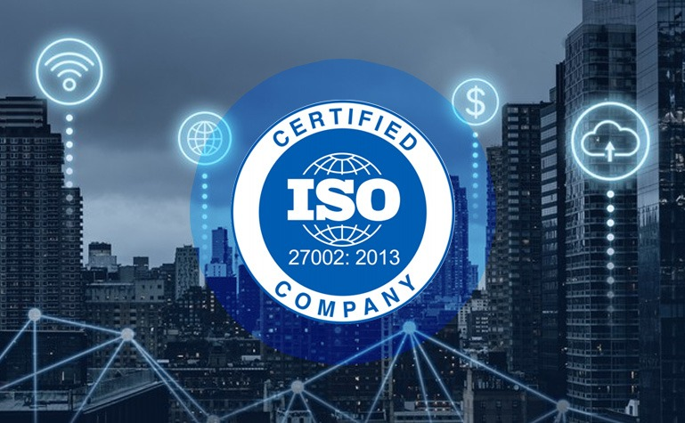
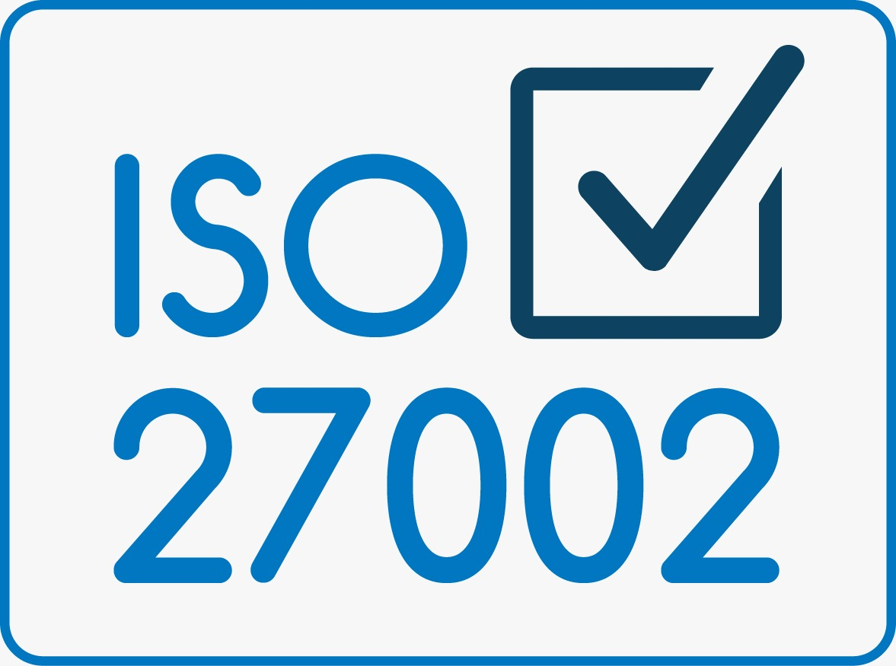

Costilla Retuerto Fernando
Huacho, 16/05/2026

La información se ha consolidado como el activo fundamental para operar y tomar decisiones en las organizaciones contemporáneas.
La migración masiva a la nube, el trabajo remoto y la IA han expandido exponencialmente la superficie de ataque.
Riesgos como ransomware y espionaje elevarán el costo global del cibercrimen a 10,5 billones de dólares anuales para 2025.
La velocidad de adopción tecnológica supera la madurez de las prácticas de seguridad, generando vulnerabilidades sistémicas.
La adopción de estándares internacionales deja de ser opcional y se convierte en un requisito de supervivencia operativa y competitiva.
Ausencia de marcos normativos, escasez de talento especializado y resistencia cultural al cambio.
Alta complejidad en la gestión de ecosistemas tecnológicos legados, nube y dispositivos IoT.
Establece directrices y principios. A diferencia de ISO 27001, funciona como una guía, no define requisitos certificables.
Proporciona un menú del cual cada organización selecciona y adapta los controles que mejor respondan a su perfil de riesgo.
Agnóstico respecto a tecnologías. Actúa como un mecanismo de gobernanza que alinea riesgos con objetivos del negocio.
Define los requisitos obligatorios para establecer, implementar y mantener un SGSI (Sistema de Gestión de la Seguridad de la Información).
Proporciona la guía exhaustiva para la implementación táctica de los controles seleccionados. Es el presupuesto operativo del SGSI.
La relación entre ambas es de una complementariedad estructural fundamental.
En Perú, entidades como la SBS toman como referencia sus principios para normativas de ciberseguridad.
Su comprensión es esencial para los profesionales de TI que operan en mercados exigentes y sectores regulados.
El Departamento de Comercio e Industria (DTI) del Reino Unido publicó un primer Código de Prácticas orientativo.
La corporación Shell International desarrolló un marco interno de políticas de seguridad que luego donó al DTI británico.
Publicación formal por el BSI. Estableció un modelo dual:
Parte 1: Guía de prácticas.
Parte 2: Requisitos certificables (SGSI).
ISO adoptó la BS 7799 Parte 1 como el estándar internacional ISO/IEC 17799:2000.
Se publicaron actualizaciones y nació formalmente la ISO/IEC 27001 (certificación).
Renombrada a ISO/IEC 27002 consolidando la familia bajo el prefijo "27000".
Contenía 133 controles (11 dominios).
Filosofía enfocada en la seguridad física y perimetral de las redes (LAN/WAN).
Reducida a 114 controles (14 dominios).
Fuerte enfoque en la gestión de riesgos, el teletrabajo y dispositivos móviles.
Consolidada en 93 controles (4 macro-temas).
Cambio de paradigma hacia la ciberseguridad proactiva, privacidad y nube.
La versión 2013 no contemplaba realidades como el cloud computing masivo, arquitecturas DevSecOps y el trabajo remoto global.
La norma ahora obliga a articular el "propósito" exacto de cada control frente al riesgo específico que mitiga.
Cambios radicales: ransomware de doble extorsión y ataques a cadenas de suministro.
Las regulaciones estrictas hicieron indispensable integrar mecanismos de protección de datos personales.
Introducción de un sistema de etiquetado (hashtags) para clasificar controles desde múltiples perspectivas simultáneas.
Preventivo, Detectivo o Correctivo.
Confidencialidad, Integridad y Disponibilidad.
Identificar, Proteger, Detectar, Responder y Recuperar.
Gobernanza, Gestión de Activos, Seguridad de Redes, etc.
Gobernanza y Ecosistema, Protección, Defensa y Resiliencia.
37 controles. Pilar directivo. Diseño de políticas, gestión de proveedores, inteligencia de amenazas y cloud.
8 controles. Abarca el ciclo de vida del empleado, desde antecedentes hasta el teletrabajo y concienciación.
14 controles. Protección tangible de infraestructura, datacenters, accesos e incidentes ambientales.
34 controles. El núcleo técnico. Accesos, redes, protección de endpoints, criptografía y codificación segura.

La versión 2022 introdujo 11 controles completamente nuevos destacando:
Seguridad reactiva a predictiva analizando tácticas (5.7).
Modelo de responsabilidad compartida con proveedores (5.23).
Evitar fuga (8.12) y seudonimizar PII (8.11).
Integra DevSecOps directo al ciclo de software (8.28).
Vigilancia técnica vital para SOC y despliegues SIEM (8.16).
Modernización completa frente a amenazas del siglo XXI.
Glosario oficial. Establece un vocabulario común esencial para evitar ambigüedades en los requisitos.
Estándar certificable que establece los requisitos formales del Sistema de Gestión (SGSI).
Metodología para tratar riesgos, determinando qué controles de ISO 27002 son relevantes.
Se integra estrechamente creando una resiliencia holística contra ataques como ransomware.
ISO 27001 define los requisitos estructurales (el "qué"). ISO 27002 proporciona el manual de referencia técnica (el "cómo").
El documento puente. Justifica la inclusión o exclusión de cada control del Anexo A basados en el análisis de riesgos.
Solo se certifica formalmente ISO 27001, pero la auditoría verifica la efectividad técnica basada en la guía ISO 27002.
NIST opera a nivel estratégico. ISO 27002 actúa como el manual operativo mapeado directamente a sus funciones.
COBIT da el marco de gobierno para alinear TI. ISO 27002 operacionaliza los dominios técnicos como APO13 y DSS05.
Existe un mapeo bidireccional oficial entre las configuraciones tácticas del CIS y los controles tecnológicos de ISO 27002.
Brinda el andamiaje técnico (enmascaramiento, eliminación de información) para demostrar el cumplimiento legal.
No es un proyecto exclusivo de TI, sino una transformación que afecta la cultura, valores y comportamientos organizacionales.
La falta de gestión genera controles de papel. El patrocinio ejecutivo visible es fundamental contra la resistencia.
Capacitación continua para que los empleados internalicen la seguridad como norma social (6.3).
Permite pasar de procesos informales (Nivel 1) a una optimización continua (Nivel 5).
Seguridad desde el diseño. Los requisitos de seguridad deben evaluarse antes de comprometer recursos (5.8).
Codificación segura (8.28) y herramientas (SAST/DAST) evitan que el código llegue a producción sin escrutinio.
Exige procesos de gestión de vulnerabilidades para mitigar brechas con parches de forma oportuna (8.8).
Inicia con un análisis de brecha para priorizar la inversión. Una implementación toma entre 12 y 24 meses.
Para Pymes: de $15,000 a $50,000 USD.
En multinacionales puede superar el Millón de dólares.
Técnicos: Sistemas legacy y entornos multicloud.
Humanos: Escasez global de talento.
Las organizaciones con programas maduros sufren menos incidentes, y cuando ocurren, el impacto es mitigado rápidamente. Esta reducción es tan medible que las aseguradoras ofrecen primas más bajas.
La redundancia (8.14) y la preparación TIC (5.30) crean una infraestructura altamente resiliente. Minimiza drásticamente el tiempo de recuperación (RTO) y pérdida de datos (RPO).
Poseer una certificación internacional es un poderoso diferenciador reputacional, a menudo un requisito obligatorio para acceder a nuevos mercados y licitaciones gubernamentales.
Introduce disciplina operativa que optimiza recursos. Reducir incidentes y automatizar controles generan ahorros reales y sostenibles que compensan la inversión inicial.
Desafíos: Sistemas legados, restricciones presupuestarias y alta visibilidad pública.
Beneficio: Estandarización y demostración de responsabilidad ante ciudadanos.
Motivadores: Requisitos contractuales y presiones regulatorias.
Éxito: El ROI depende de un enfoque basado en riesgos y patrocinio ejecutivo genuino.
Alto riesgo de fraude. Regulado por SBS. Prioriza: Threat Intel (5.7), DLP (8.12), Enmascaramiento y Criptografía.
Gestiona datos médicos (PHI). Se apoya en ISO 27799 abarcando IoT médico, registros y telemedicina.
Infraestructura crítica global. Controles clave: Seguridad física, segregación de redes y cadena de suministro.
Escala masiva. Aplica el control 5.23 para definir el modelo de responsabilidad compartida proveedor/cliente.
El compromiso visible de la alta dirección logra objetivos con mayor velocidad y profundidad.
Evaluación rigurosa antes de intentar implementar todos los controles del catálogo indiscriminadamente.
Es más efectivo comenzar con un alcance limitado y expandirlo, evitando transformaciones totales simultáneas.
La formación del personal tiene la misma importancia estratégica que los controles técnicos.
Profesionalización del delito (Ransomware/Phishing as a Service) democratizando capacidades ofensivas.
Robo y cifrado simultáneo exigen estrategias de prevención de exfiltración (DLP) y respuesta rápida.
Ataques tipo SolarWinds demuestran que un solo componente vulnerado compromete a miles de organizaciones.
Vector primario (phishing, vishing). Ningún control compensa un empleado sin capacitación adecuada.
El objetivo es que los empleados cuestionen anomalías y protejan la información instintivamente.
Pasar de formaciones anuales a programas con simulaciones, micro-aprendizaje y gamificación.
La IA es una espada de doble filo: facilita deepfakes/phishing, pero en defensa permite análisis UEBA en tiempo real para detectar anomalías. Su gobernanza se integra con ISO 42001.
Elimina el perímetro seguro bajo la premisa "nunca confiar, siempre verificar". Su aplicación depende de controles de ISO 27002 como microsegmentación (8.22), monitoreo (8.16) y MFA.
Frente al déficit de profesionales, la intervención manual no basta. Las plataformas SOAR automatizan flujos de respuesta y parches, reduciendo la ventana de reacción de horas a minutos.
La combinación de nubes, infraestructura local y trabajo remoto exige aplicar políticas uniformemente. Requiere identidad federada (SSO) y monitoreo unificado (8.16) sin importar dónde residan los datos.
Cuando los ordenadores cuánticos maduren, el cifrado asimétrico (como RSA) dejará de ser seguro. Los controles de criptografía (8.24) evolucionarán hacia estándares post-cuánticos del NIST.
La convergencia de TI con ICS/SCADA y el IoT presenta retos. Estos dispositivos tienen limitaciones que impiden instalar agentes de seguridad tradicionales, exigiendo una evolución normativa especializada.
El futuro del gobierno digital requiere abandonar silos. La tendencia es migrar hacia un sistema unificado que articule la ciberseguridad, privacidad, ética de IA y resiliencia operacional.
Es el catálogo más completo y utilizado mundialmente. El lenguaje común de la seguridad aplicable a cualquier organización.
Desde BS 7799 hasta 2022 refleja una maduración progresiva que responde a la transformación tecnológica.
La versión 2022 representa el mayor nivel de sofisticación, destacando su modelo de atributos multidimensional.
4 macro-temas y 93 controles cubren todas las dimensiones (organizacional, humana, física y técnica).
La gestión de riesgos (ISO 27005) justifica técnica y económicamente qué controles se activan. ISO 27001 dicta el "qué" debe lograr el sistema, mientras ISO 27002 proporciona el "cómo".
ISO 27002 es la capa operativa que conecta requisitos: articula la visión del NIST CSF, las directrices de COBIT, las mitigaciones de CIS Controls y las obligaciones del GDPR.
Implementar la norma transforma la cultura organizacional y la gestión tecnológica. El ROI se visualiza al recortar drásticamente los altos costos de respuesta y daño ante ciberataques.
Basarse en principios técnicos neutrales y un sistema de atributos multidimensional asegura que la versión 2022 no se vuelva obsoleta ante innovaciones como IA o Zero Trust.
Responsabilidad indelegable de posicionar la ciberseguridad como riesgo estratégico. Deben proveer un patrocinio visible para vencer resistencia cultural y garantizar un presupuesto alineado matemáticamente.
Abandonar auditorías en hojas de cálculo y explotar el modelo de atributos para generar vistas dinámicas. Prioridad: implantar controles modernos (Threat Intelligence, Cloud, DLP).
Iniciar proyectos con análisis de brecha (gap analysis) honesto. El enfoque no es añadir software, sino integrar la seguridad inherentemente en cada ciclo de desarrollo (security by design).
Proveer métricas fiables sobre la eficacia de cada control. Definir impactos normativos de la inteligencia artificial generativa, el edge computing y futuras tecnologías cuánticas.
La estructura se ha simplificado y optimizado lógicamente; pasó de tener 133 controles divididos en 11 dominios en 2005, a 114 controles en 14 cláusulas en 2013. Finalmente, en 2022, se consolidó en 93 controles agrupados en solo 4 macro-temas (organizacionales, personas, físicos y tecnológicos), dotados ahora de 5 dimensiones de atributos para filtrado dinámico.
Responden directamente a las vulnerabilidades modernas descubiertas en la última década. Incluyen: Inteligencia de Amenazas (5.7), Seguridad Cloud (5.23), Continuidad TIC (5.30), Monitoreo Físico Inteligente (7.4), Gestión de la Configuración (8.9), Eliminación de Información (8.10), Enmascaramiento de Datos (8.11), DLP para fuga de datos (8.12), Actividades de Monitoreo continuo (8.16), Filtrado Web (8.23) y Codificación Segura (8.28).
Las métricas de casos reales avalan la norma. Una empresa de manufactura documentó una reducción del 18% en defectos de producción al asegurar sus redes OT. Un sistema de salud logró prevenir 340 eventos médicos adversos anuales al asegurar su disponibilidad de datos. Un retailer B2C aumentó un 15% sus ingresos simplemente capitalizando la confianza de sus clientes tras la certificación.
El control 5.7 (Inteligencia de Amenazas) cumple directamente con la función Identify del NIST CSF, el objetivo APO12 de COBIT y el Artículo 32 del GDPR. El control de Gestión de Incidentes (5.24) homologa con Respond del NIST y DSS05 de COBIT. El enmascaramiento de datos y el monitoreo atienden las obligaciones críticas de privacidad (Protect y Detect) exigidas globalmente.
FIN DE LA PRESENTACIÓN